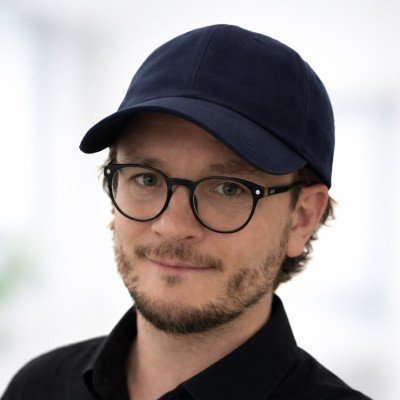

World of Warships × Star Trek
I implemented this partnership campaign across EMEA, reaching Star Trek fans through programmatic, influencer, retargeting and PR campaigns. The late-2024 event brought the Borg, Picard and Spock into the game.

Product marketing and marketing leadership for technical products.
I'm Head of Marketing at Gallio PRO, a B2B AI product that anonymises faces and licence plates in video and images. Before that I worked in games, most recently as Product Marketing Manager EMEA at Wargaming on World of Warships.
Different industries, same core job: taking a product people don't fully understand yet and finding the audience, partner or format that makes it land.
Now
I lead marketing for a compliance-driven B2B product across EMEA and North America: strategy and positioning, the budget, agency and vendor relationships, and the full funnel from demand generation to pipeline and revenue. I own our marketing KPIs and reporting, and work closely with sales on pipeline quality.
Unusually for a marketer, I build my own measurement and attribution stack, so the experiments I run are grounded in real data rather than assumptions.
Before
I implemented this partnership campaign across EMEA, reaching Star Trek fans through programmatic, influencer, retargeting and PR campaigns. The late-2024 event brought the Borg, Picard and Spock into the game.
I implemented this partnership campaign across EMEA, part of Wargaming's Metal Fest in August 2023, which brought Megadeth and their mascot Vic Rattlehead into the game. It brought together two audiences that do not commonly overlap, and was covered by Xbox Wire and Blabbermouth.
A series of World of Warships gaming rooms in naval museums in the UK, the Netherlands and Poland. I joined the UK and Netherlands projects at a later stage, and built the Polish one, at the Polish Naval Museum in Gdynia, from the beginning. It opened on 19 September 2025 for the game's tenth anniversary.
In April 2024 we announced Švejk, the first Czech commander in World of Warships, through a mixed-reality ad in Metro's Czech newspaper. It was Flam's first campaign with a gaming partner, and Flam publicly credited me for working with them to get it live.
A celebrity collaboration covered by PPE.pl, including how we matched the talent to the audience and ran the production.
World of Warships at Portsmouth Armed Forces Day on 8 June 2024, closing a week of D-Day 80 commemorations: game stations with a special D-Day mode for adults and children, a photobooth and panel discussions. Delivered together with the agency GLTCH.
Experience
What people say
In fact, I often found myself learning from his unique approach and innovative thinking. […] Your contributions played a major role in making World of Warships known across the MENA region.
What I loved most was that he never made you feel like he was just a client. Instead, it felt like we were an extension of his team.
Focused on targets and crunching on numbers while acknowledging power of PR and personal relations.
Recognition and credentials
Named by Product Marketing Alliance in its Top 100 Product Marketing Influencers list for 2024.
Speaking and interviews
He was confident, engaging, and effortlessly charismatic. He knew how to read the room, spark interest, and leave people both inspired and entertained.
Contact
Lately I'm most interested in where AI meets B2B growth, and in shortening the distance between an idea and a measurable result.
The best way to reach me is on LinkedIn.
Based in Wrocław, Poland. Working in English, Polish and Czech.